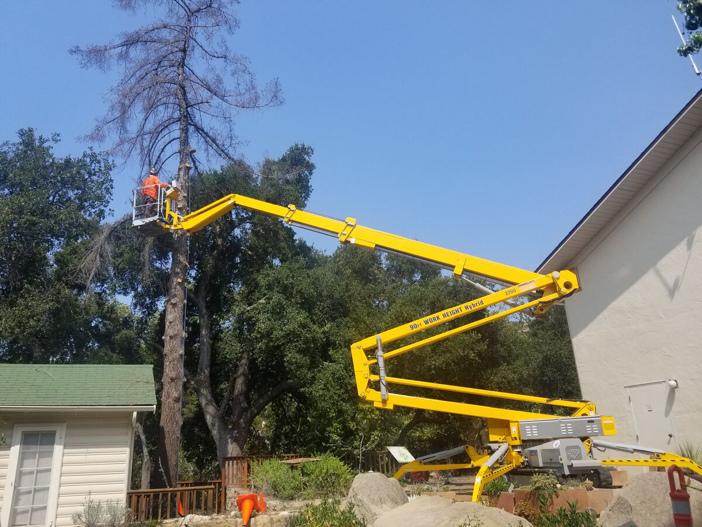
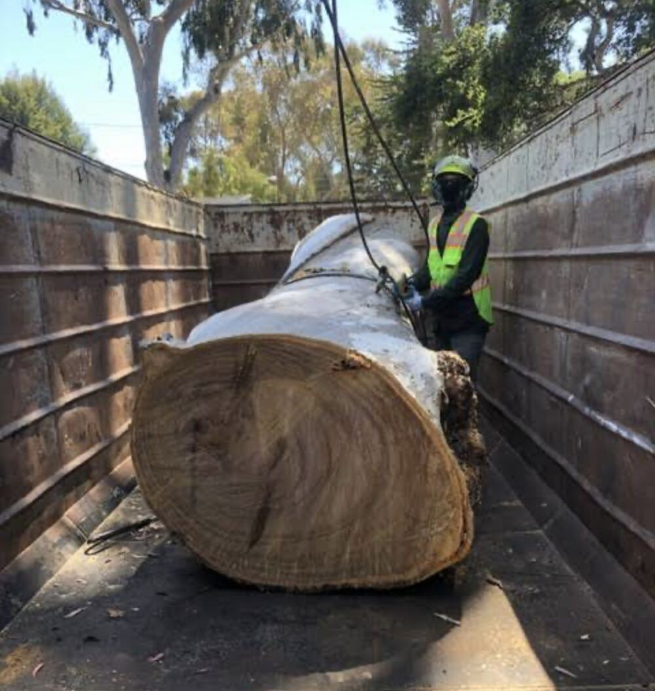
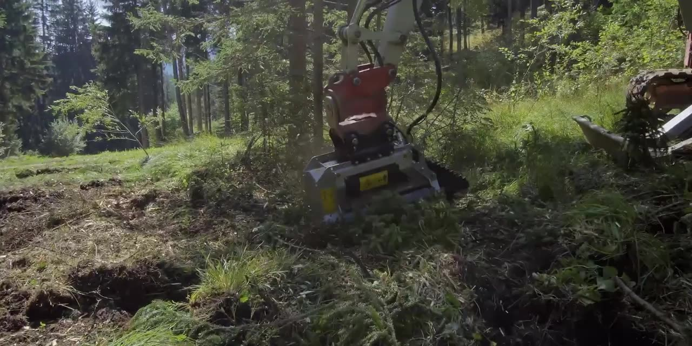
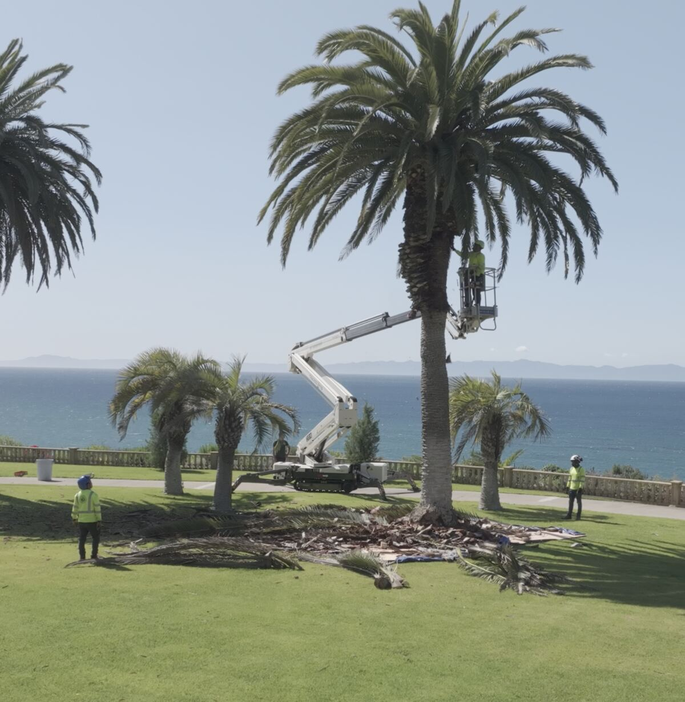
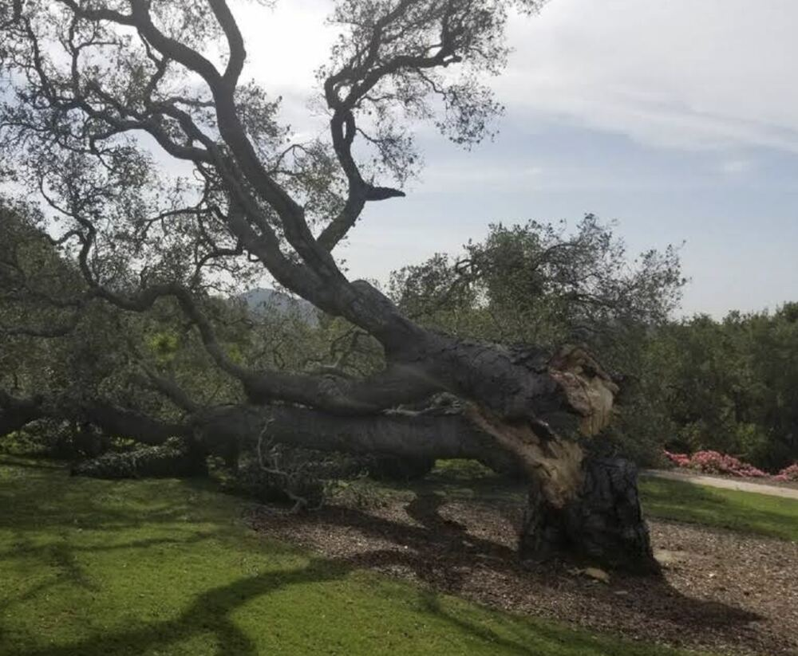
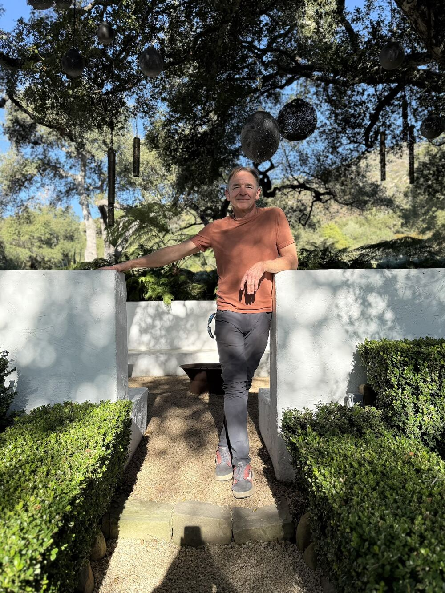
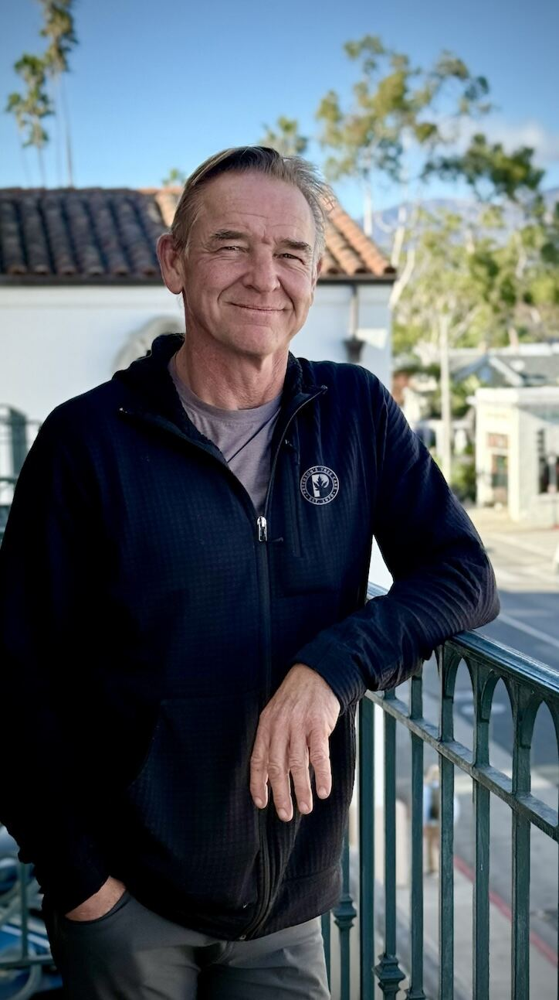
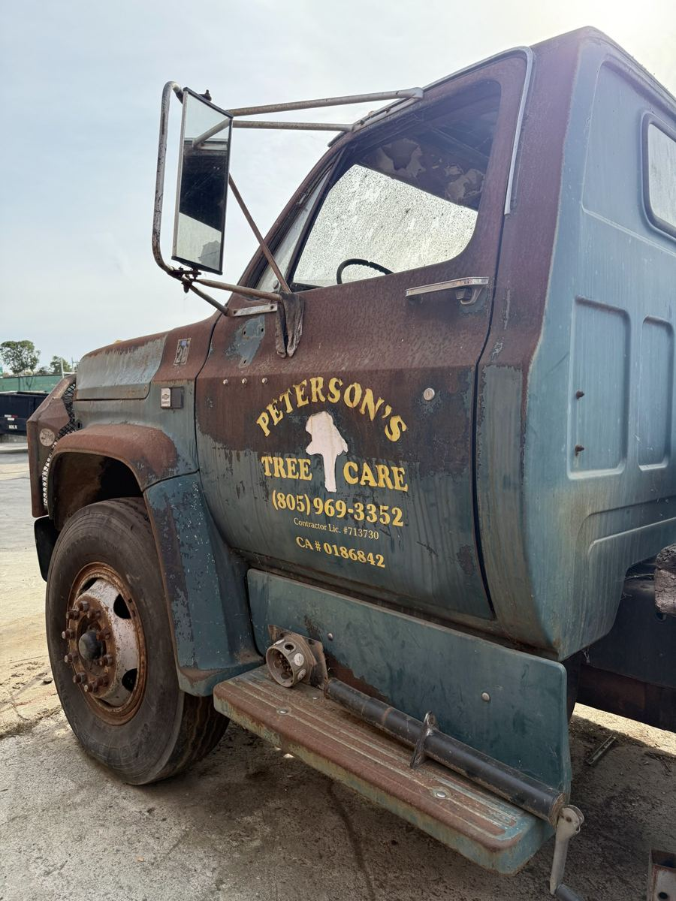

Tree trimming & pruning
Structural and canopy pruning that keeps trees healthy and safe, done with an expert hand. Our tracked lifts reach backyard trees without damaging lawns.
Enquire nowPeterson's Tree Care · Est. 1970
Expert tree care from Montecito to Goleta, led by ISA Certified Arborist Peter Scott.
Our Passion
Getting started is easy. Give us a call and we’ll schedule a visit at a time that works for you. We’ll walk the property with arborist Peter Scott, who looks after the coast live oaks, sycamores, eucalyptus and palms of the South Coast with a light hand.
We maintain the safety, beauty and longevity of your trees, then leave the property cleaner than we found it.
Services

Structural and canopy pruning that keeps trees healthy and safe, done with an expert hand. Our tracked lifts reach backyard trees without damaging lawns.
Enquire now
Safe removal of dead, dying or hazardous trees, including big eucalyptus in tight spaces. We chip, haul and clean up everything.
Enquire now
Fire-safe brush clearance and fire-road maintenance with our Takeuchi TB370, for homes, ranches and HOAs.
Get a brush clearance estimate
Clean, safe trimming of Canary Island and Mexican fan palms, from ocean-bluff estates to downtown streets.
Enquire now
Fallen trees and hanging limbs don't wait for business hours. Call 805.969.3352 any time, day or night.
Call now
Tree health diagnosis, risk assessment and planning for homes, commercial sites and municipalities, from Peter Scott directly.
Arborist consultingAlso: Stump grinding & extractionTree planting & transplantingCabling & bracingPest & disease managementFertilization & irrigationOrchard care
Native oaks
Oaks were here long before the Mission. A healthy coast live oak can live for centuries, shelters hundreds of species of birds and insects, and shades the hillsides that make this coast what it is. We prune them lightly, protect their roots, and help you keep them for the next generation.
The evergreen oak of the South Coast, with spiny, holly-like leaves like the ones drifting down this page. You'll find it in Montecito, Hope Ranch, Mission Canyon and along every creek.
The largest oak in North America. It drops its leaves in winter and grows on deep valley soils inland, from Goleta's foothills to the Santa Ynez Valley.
A tough, drought-adapted oak with blue-green leaves, found on the dry inland hills of Santa Barbara County.
Most oak problems start at the roots. A few habits keep a mature oak thriving.

Meet your arborist
Owner and ISA Certified Arborist, Peterson's Tree Care
Peter owns and runs Peterson's Tree Care and walks every property himself. His passion and knowledge run deep in arboriculture: he diagnoses pests and disease, plans pruning that suits each species, and makes sure the work meets ISA and ANSI standards.
When you call, you get an arborist's opinion, not a sales pitch.
Work with us
Why Peterson's
A Santa Barbara company that knows the trees, the hillsides and the permit rules here.
A free written estimate, and we stick to it.
Every job is planned by ISA Certified Arborist Peter Scott.
Tracked spider lifts, bucket trucks and excavators that maintain a non-invasive approach to your property.
Storm damage and fallen trees, any hour, every day.
Chipped, hauled and raked before we leave.
Testimonials

Our history
Peterson's Tree Care is established locally in Santa Barbara.
The company grows with the region, from Mission Canyon to the Montecito bluffs.
Owned and run by ISA Certified Arborist Peter Scott, with tracked lifts, a bucket truck and an excavator for fire-safe brush clearance.
Service area
Yes. We visit the property, look at every tree with you, and give you a written estimate at no cost.
Yes, 24 hours a day, 7 days a week. For a fallen tree or a dangerous limb, call 805.969.3352.
Yes. Owner Peter Scott is an ISA Certified Arborist, certification number WE-4180.
Yes. We clear brush to Santa Barbara County defensible-space distances and maintain fire roads, with an excavator for large or steep sites.
Always. Branches are chipped, wood is hauled away, and the yard is raked before we leave.
It depends on the tree's size, how close it is to buildings or power lines, and how much hauling is involved. We give every customer a free written estimate after a site visit, and the price we quote is the price you pay.
Warning signs include large dead branches, deep cracks or splits in the trunk, a new lean, mushrooms or decay at the base, and soil lifting around the roots. If you see any of these, call 805.969.3352 and Peter will take a look.
Santa Barbara, Montecito, Goleta, Hope Ranch, Mission Canyon, Carpinteria, Summerland and nearby communities.
Ready to talk
Frequently asked questions
Straight answers about estimates, emergencies, fire-season brush clearance and caring for Santa Barbara's oaks. Can't find yours? Call 805.969.3352.
No questions match that search. Call 805.969.3352 and ask Peter directly.
Still have a question?
Independent arborist consulting · Santa Barbara County
An expert opinion on your trees, separate from any tree work. Peter assesses health and risk, writes reports, and plans tree care for homeowners, architects, HOAs, property managers and municipalities.
Consulting services
A walk-through of your trees with a clear verdict: what's healthy, what's at risk, and what to do first.
Identification of pests and pathogens on oaks, sycamores, palms and fruit trees, with a treatment plan.
Protection plans that keep valuable trees alive through grading, trenching and building.
Written reports for removal permits, HOA boards and city and county review, in line with local and state regulations.
Know what the trees on a property will need, and what they'll cost, before you close.
Tree inventories, planting plans and long-term care schedules for campuses, estates, orchards and public spaces.
How it works
Book below or call. Share the address and any deadlines, such as a permit date or an escrow close.
Peter inspects the trees in person and answers your questions on the spot.
You get a verbal summary, or a written report when one is needed for a permit, board or sale.
Consulting is independent. Use any qualified crew, or ask Peterson's Tree Care for an estimate.
Book a consultation